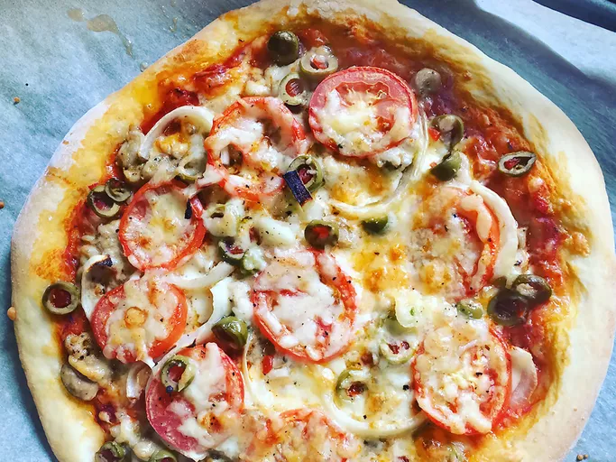

Homemade Pizza Dough

Description
This simple pizza dough is the perfect base for any pizza. Made with just flour, yeast, water, olive oil, and a pinch of salt, it's easy to prepare and creates a soft, stretchy dough that's both light and chewy.
Ingredients
- Yeast
- Sugar
- Bread Flour
- Olive Oil
- Salt
Steps
- Place warm water in a bowl; add yeast and sugar. Mix and let stand until creamy, about 10 minutes.
- Add flour, oil, and salt to the yeast mixture; beat until smooth.
- Let rest for 5 minutes.
- Turn dough out onto a lightly floured surface and pat or roll into a 12-inch circle.
- Transfer to the prepared pizza pan.
- Spread crust with sauce and toppings of your choice.
- Bake in the preheated oven until golden brown, 15 to 20 minutes.
- Remove from the oven and let cool for 5 minutes before serving.